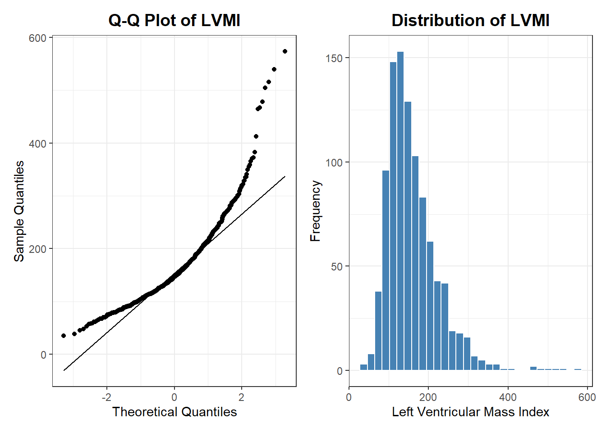
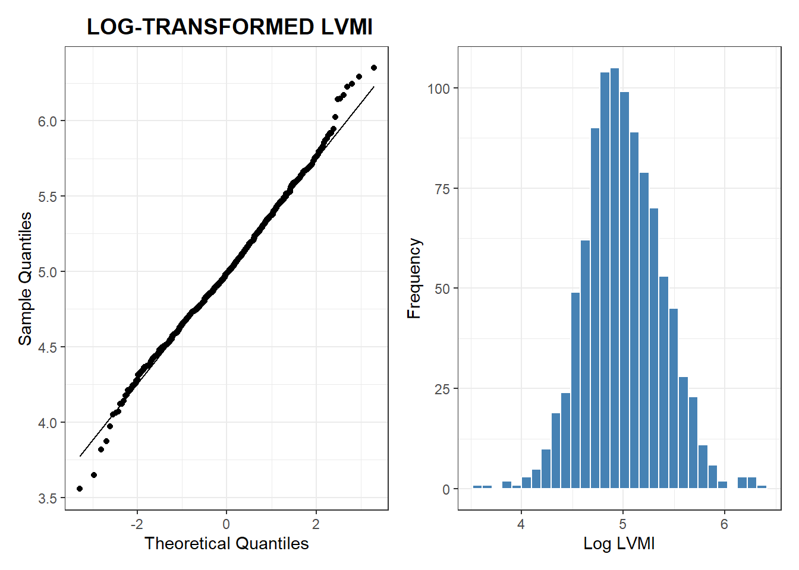
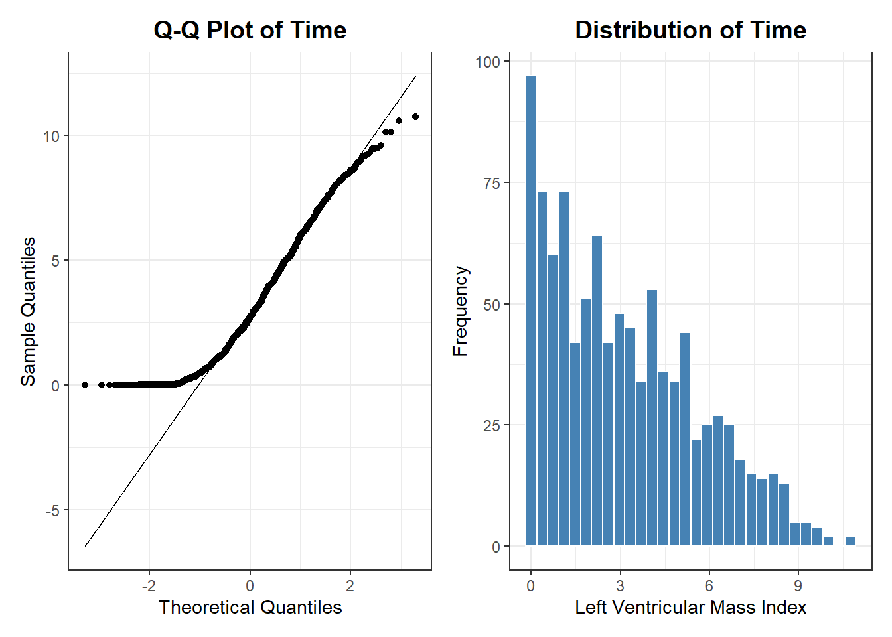
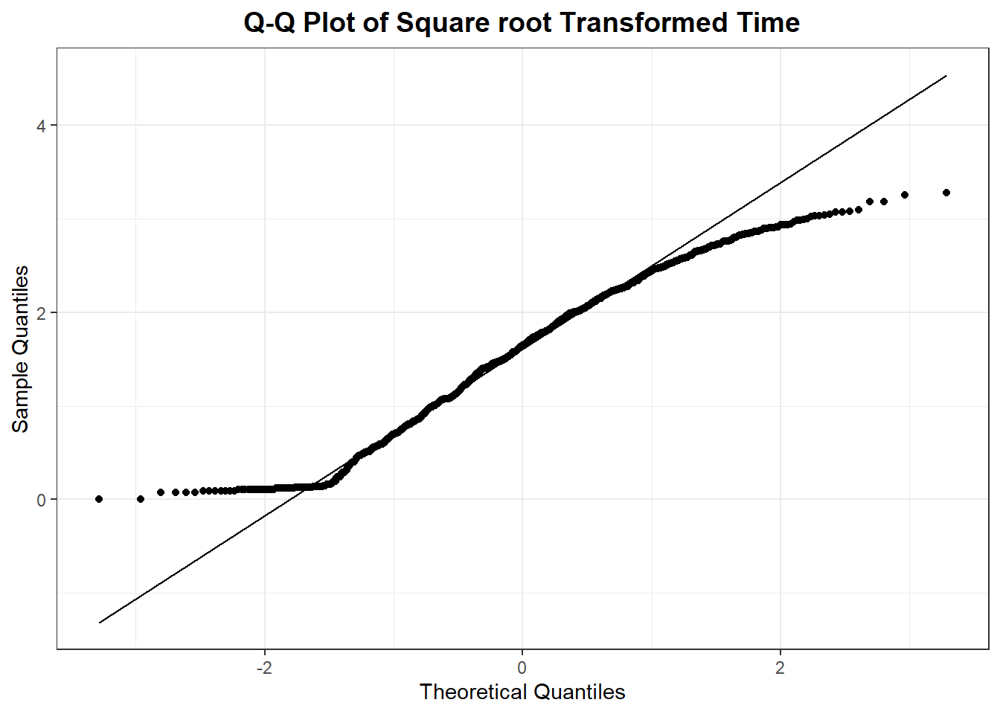
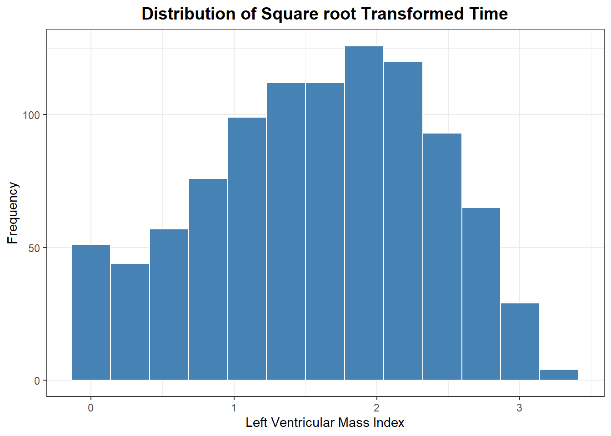
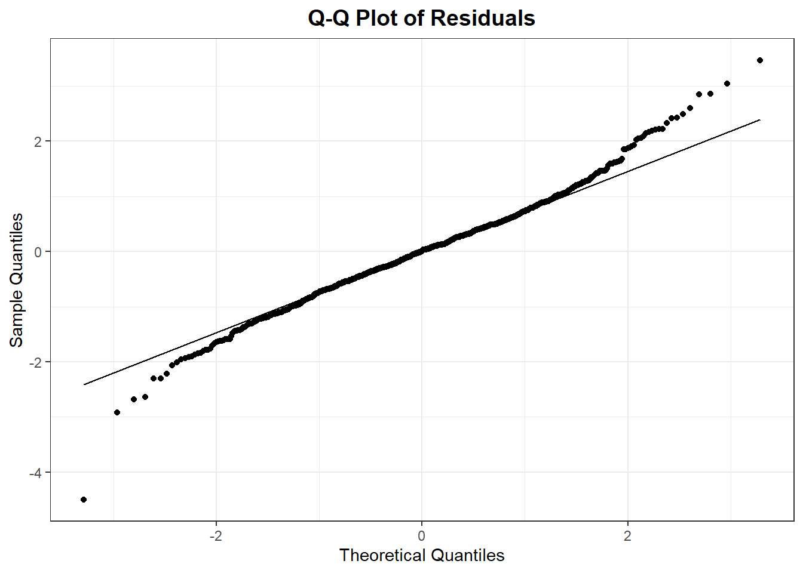
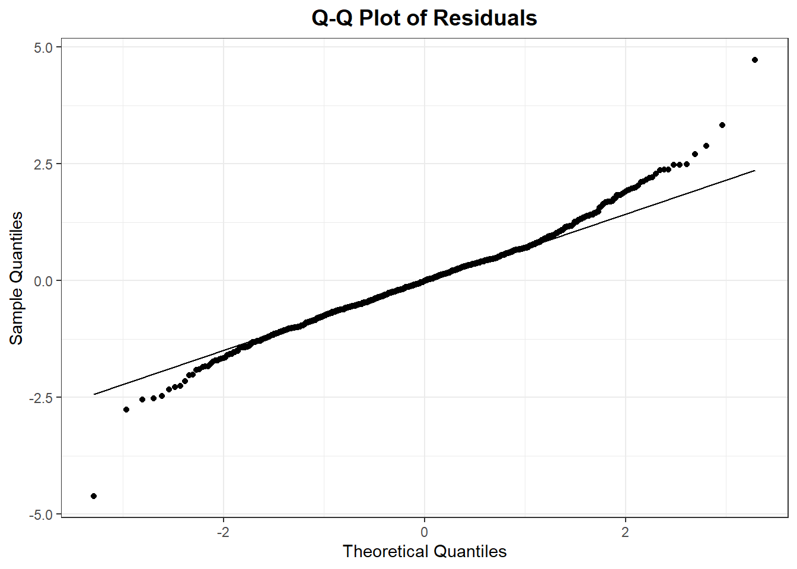
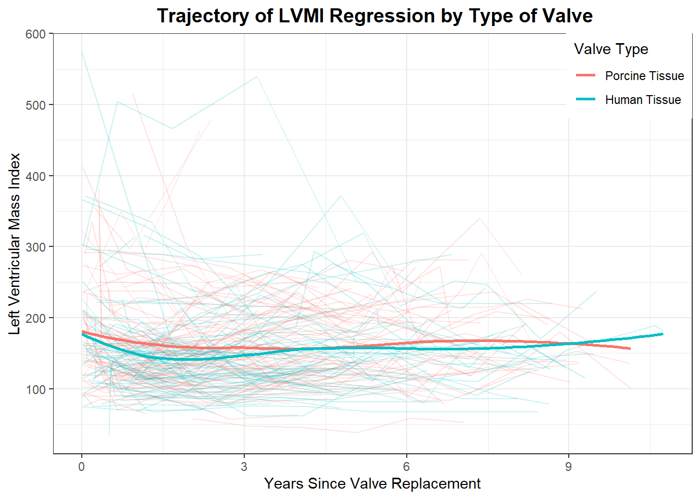
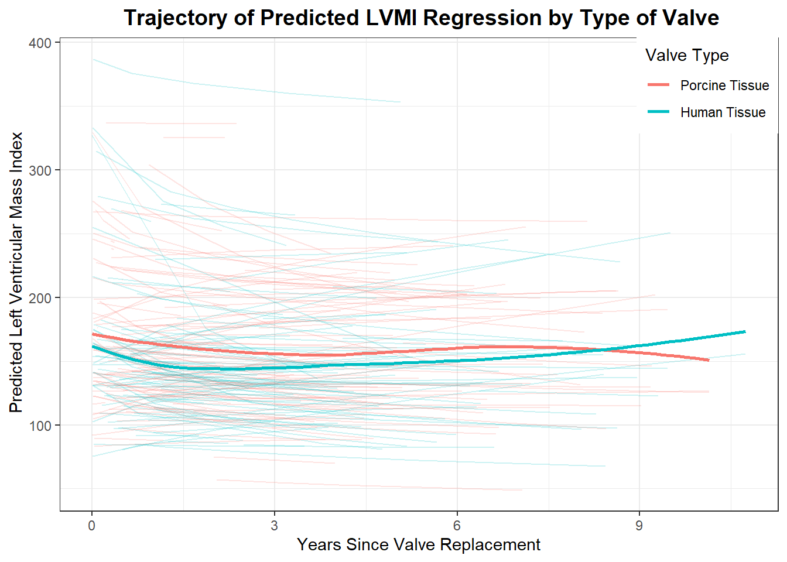
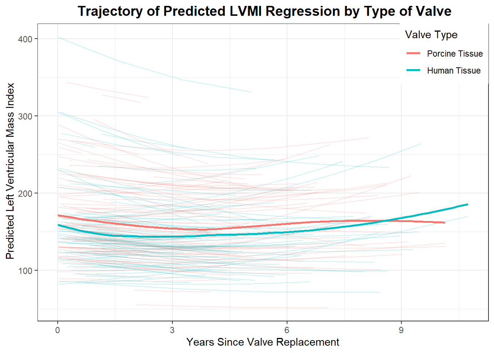

library(tidyverse)
library(nlme)
library(broom)
library(finalfit)
library(gtsummary)
library(lmtest)
library(lme4)
library(clubSandwich)
library(patchwork)
theme_set(theme_bw())DATA ANALYSIS
heart_df <- read.table("aortic_valve.dat",header = TRUE)df <- heart_df %>%
mutate(
age = age %>% ff_label("Age(years)"),
sex = if_else(sex ==0,"Male","Female") %>%
fct_relevel("Female") %>%
ff_label("Sex"),
redo = if_else(redo ==0,"No","Yes") %>%
fct_relevel("No") %>%
ff_label("Previous Cardiac Surgery"),
emerg = if_else(emerg == 0,"Elective","Emergent") %>%
fct_relevel("Elective") %>%
ff_label("Operative Urgency"),
dm = if_else(dm ==0,"No","Yes") %>%
fct_relevel("No") %>%
ff_label("Preoperative Diabetes"),
type = if_else(type ==1,"Human Tissue","Porcine Tissue") %>%
fct_relevel("Porcine Tissue") %>%
ff_label("Type of Valve"),
lvmi =lvmi %>% ff_label("LVMI"),
futime = futime %>% ff_label("Follow-up Time(years)"),
status = if_else(status == 0,"Censored","Death") %>%
fct_relevel("Censored") %>%
ff_label("Status")
)df_new <- heart_df %>%
group_by(id) %>%
summarize(across(where(is.numeric), mean),
across(where(~ !is.numeric(.)), first)) %>%
ungroup() %>%
mutate(
age = age %>% ff_label("Age(years)"),
sex = if_else(sex ==0,"Male","Female") %>%
fct_relevel("Female") %>%
ff_label("Sex"),
redo = if_else(redo ==0,"No","Yes") %>%
fct_relevel("No") %>%
ff_label("Previous Cardiac Surgery"),
emerg = if_else(emerg == 0,"Elective","Emergent") %>%
fct_relevel("Elective") %>%
ff_label("Operative Urgency"),
dm = if_else(dm ==0,"No","Yes") %>%
fct_relevel("No") %>%
ff_label("Preoperative Diabetes"),
type = if_else(type ==1,"Human Tissue","Porcine Tissue") %>%
fct_relevel("Porcine Tissue") %>%
ff_label("Type of Valve"),
lvmi =lvmi %>% ff_label("LVMI"),
futime = futime %>% ff_label("Follow-up Time(years)"),
status = if_else(status == 0,"Censored","Death") %>%
fct_relevel("Censored") %>%
ff_label("Status")
)#| label: "Table One"
#| tbl-cap: "**TABLE ONE**"
df_new %>% select(-c(time,id)) %>%
tbl_summary(by = type,
statistic =
list(all_categorical() ~ "{n} ({p}%)",
all_continuous() ~ "{mean} ({sd})"),
digits = list(all_categorical() ~ 0,
all_continuous() ~ 0),
) %>%
add_overall() %>%
bold_labels() %>%
italicize_levels() %>%
modify_spanning_header(
update = all_stat_cols() ~ "**Type of Valve**"
) %>%
modify_footnote(update = all_stat_cols() ~
"*mean(standard deviation) for continuous; n(%) for categorical*")| Characteristic | Type of Valve | ||
|---|---|---|---|
| Overall, N = 2561 | Porcine Tissue, N = 1331 | Human Tissue, N = 1231 | |
| Follow-up Time(years) | 5 (3) | 5 (2) | 5 (3) |
| Status | |||
| Censored | 202 (79%) | 95 (71%) | 107 (87%) |
| Death | 54 (21%) | 38 (29%) | 16 (13%) |
| LVMI | 162 (59) | 164 (56) | 159 (62) |
| Age(years) | 66 (12) | 71 (9) | 60 (13) |
| Sex | |||
| Female | 73 (29%) | 41 (31%) | 32 (26%) |
| Male | 183 (71%) | 92 (69%) | 91 (74%) |
| Previous Cardiac Surgery | 26 (10%) | 6 (5%) | 20 (16%) |
| Operative Urgency | |||
| Elective | 227 (89%) | 115 (86%) | 112 (91%) |
| Emergent | 29 (11%) | 18 (14%) | 11 (9%) |
| Preoperative Diabetes | 12 (5%) | 7 (5%) | 5 (4%) |
| 1 mean(standard deviation) for continuous; n(%) for categorical | |||
heart_df <- heart_df %>%
mutate(across(
sex:type,
as_factor
)) %>%
mutate(log_lvmi = log(lvmi),
type = if_else(type ==1,0,1))Model 1 with no interaction term of time and type
model1 <- heart_df %>%
lmer(lvmi ~ time + age + sex + redo + emerg + dm + type +
(time|id),REML = FALSE, data = .)
summary(model1)Linear mixed model fit by maximum likelihood ['lmerMod']
Formula: lvmi ~ time + age + sex + redo + emerg + dm + type + (time | id)
Data: .
AIC BIC logLik deviance df.resid
10517.5 10576.3 -5246.8 10493.5 976
Scaled residuals:
Min 1Q Median 3Q Max
-3.6158 -0.4422 -0.0894 0.3518 7.6193
Random effects:
Groups Name Variance Std.Dev. Corr
id (Intercept) 3630.05 60.250
time 61.87 7.866 -0.61
Residual 1283.95 35.832
Number of obs: 988, groups: id, 256
Fixed effects:
Estimate Std. Error t value
(Intercept) 176.0637 19.9948 8.805
time -1.7768 0.8879 -2.001
age -0.1402 0.3183 -0.441
sex1 -26.9145 7.8447 -3.431
redo1 5.4870 12.0081 0.457
emerg1 3.1281 11.5900 0.270
dm1 -24.8586 16.3642 -1.519
type 11.2094 7.8914 1.420
Correlation of Fixed Effects:
(Intr) time age sex1 redo1 emerg1 dm1
time -0.236
age -0.945 0.101
sex1 0.013 0.019 -0.132
redo1 -0.017 -0.034 -0.078 0.086
emerg1 0.006 0.083 -0.054 -0.019 -0.098
dm1 -0.011 -0.008 -0.013 -0.019 -0.062 -0.012
type 0.230 -0.044 -0.424 0.036 0.202 -0.060 -0.033Model 2 with interaction of time and type
model2 <- heart_df %>%
lmer(lvmi ~ time + age + sex + redo + emerg + dm + type + time:type +
(time|id),REML = FALSE, data = .)
summary(model2)Linear mixed model fit by maximum likelihood ['lmerMod']
Formula: lvmi ~ time + age + sex + redo + emerg + dm + type + time:type +
(time | id)
Data: .
AIC BIC logLik deviance df.resid
10519.3 10582.9 -5246.6 10493.3 975
Scaled residuals:
Min 1Q Median 3Q Max
-3.6184 -0.4472 -0.0883 0.3401 7.6013
Random effects:
Groups Name Variance Std.Dev. Corr
id (Intercept) 3632.27 60.268
time 61.98 7.873 -0.61
Residual 1282.62 35.814
Number of obs: 988, groups: id, 256
Fixed effects:
Estimate Std. Error t value
(Intercept) 177.3030 20.1485 8.800
time -2.2567 1.2779 -1.766
age -0.1370 0.3186 -0.430
sex1 -26.7752 7.8545 -3.409
redo1 5.6364 12.0194 0.469
emerg1 3.0261 11.5967 0.261
dm1 -25.0765 16.3801 -1.531
type 8.4090 9.5578 0.880
time:type 0.9168 1.7634 0.520
Correlation of Fixed Effects:
(Intr) time age sex1 redo1 emerg1 dm1 type
time -0.247
age -0.936 0.056
sex1 0.017 -0.012 -0.131
redo1 -0.014 -0.040 -0.077 0.087
emerg1 0.004 0.068 -0.054 -0.020 -0.098
dm1 -0.014 0.012 -0.014 -0.020 -0.063 -0.012
type 0.122 0.380 -0.361 0.010 0.154 -0.041 -0.014
time:type 0.118 -0.719 0.019 0.035 0.023 -0.015 -0.025 -0.563Likelihood ratio test of Model 1 and Model2
lrtest(model1,model2)| #Df | LogLik | Df | Chisq | Pr(>Chisq) |
|---|---|---|---|---|
| 12 | -5246.760 | NA | NA | NA |
| 13 | -5246.625 | 1 | 0.2696766 | 0.6035488 |
We fail to reject the null hypothesis that the interaction term does not improve model 2 compared to model 1 (p-value = 0.605)
Model 3 with log transformation of the response variable lvmi
q <- heart_df %>%
ggplot(aes(sample = lvmi))+
stat_qq()+
stat_qq_line()+
labs(
title = "Q-Q Plot of LVMI",
x = "Theoretical Quantiles",
y = "Sample Quantiles"
)+
theme(plot.title = element_text(hjust = 0.5, size = 14, face="bold"))
h <- heart_df %>%
ggplot(aes(x = lvmi))+
geom_histogram(fill = "steelblue",color = "white")+
labs(x = "Left Ventricular Mass Index",
y = "Frequency",
title = "Distribution of LVMI")+
theme(plot.title = element_text(hjust = 0.5, size = 14, face="bold") )
q + h
The distribution of LVMI is positively skewed, with most values concentrated between 100 and 250, as seen in the histogram, while a small number of outliers extend up to 600. The Q-Q plot further highlights the non-normality, with the data deviating substantially from the theoretical line, particularly in the upper tail, indicating extreme values. This suggests that the data may benefit from a transformation, such as a logarithmic scale, to improve normality and reduce the influence of outliers for further analysis.
q1 <- heart_df %>%
ggplot(aes(sample = log(lvmi)))+
stat_qq()+
stat_qq_line()+
labs(
title = " LOG-TRANSFORMED LVMI",
x = "Theoretical Quantiles",
y = "Sample Quantiles"
)+
theme(plot.title = element_text(hjust = 0.5, size = 14, face="bold"))
h1 <- heart_df %>%
ggplot(aes(x = log(lvmi)))+
geom_histogram(fill = "steelblue",color = "white")+
labs(x = "Log LVMI",
y = "Frequency")+
theme(plot.title = element_text(hjust = 0.5, size = 14, face="bold"))
q1 + h1
The log-transformation of LVMI results in a more symmetric, approximately normal distribution, as shown in the histogram, with values centered around 4.5 to 5.5. This transformation addresses the skewness seen in the original data and minimizes the influence of outliers. The Q-Q plot further supports this improvement, with data points closely aligning with the theoretical quantiles, indicating that the log-transformed LVMI better meets the assumptions of normality.
model3 <- heart_df %>%
lmer(log_lvmi ~ time + age + sex + redo + emerg + dm + type +
(time|id),REML = FALSE, data = .)
summary(model3)Linear mixed model fit by maximum likelihood ['lmerMod']
Formula: log_lvmi ~ time + age + sex + redo + emerg + dm + type + (time |
id)
Data: .
AIC BIC logLik deviance df.resid
228.2 286.9 -102.1 204.2 976
Scaled residuals:
Min 1Q Median 3Q Max
-4.5139 -0.5286 -0.0205 0.4629 4.7866
Random effects:
Groups Name Variance Std.Dev. Corr
id (Intercept) 0.103682 0.3220
time 0.001815 0.0426 -0.40
Residual 0.037003 0.1924
Number of obs: 988, groups: id, 256
Fixed effects:
Estimate Std. Error t value
(Intercept) 5.0688524 0.1159438 43.718
time -0.0088015 0.0049356 -1.783
age -0.0004801 0.0018569 -0.259
sex1 -0.1711794 0.0454879 -3.763
redo1 0.0560436 0.0701855 0.799
emerg1 0.0174978 0.0656329 0.267
dm1 -0.1969323 0.0956937 -2.058
type 0.0757874 0.0460659 1.645
Correlation of Fixed Effects:
(Intr) time age sex1 redo1 emerg1 dm1
time -0.176
age -0.949 0.073
sex1 0.008 0.018 -0.123
redo1 -0.022 -0.033 -0.072 0.082
emerg1 0.011 0.063 -0.056 -0.025 -0.099
dm1 -0.010 -0.012 -0.014 -0.023 -0.063 -0.017
type 0.236 -0.030 -0.429 0.025 0.198 -0.055 -0.029Likelihood ratio test to compare model 1 and model 3
lrtest(model1,model3)| #Df | LogLik | Df | Chisq | Pr(>Chisq) |
|---|---|---|---|---|
| 12 | -5246.7602 | NA | NA | NA |
| 12 | -102.0928 | 0 | 10289.33 | 0 |
The log-likelihood of Model 2 (-102.1) is substantially higher than that of Model 1 (-5246.8), resulting in a large test statistic (chi sq = 10289) and a highly significant p-value ( < 2.2 x 10^-16).This indicates that the log-transformed model provides a vastly better fit to the data compared to the original LVMI model.
Model 4 with square root transformation of time
q2 <- heart_df %>%
ggplot(aes(sample = time ))+
stat_qq()+
stat_qq_line()+
labs(
title = "Q-Q Plot of Time",
x = "Theoretical Quantiles",
y = "Sample Quantiles"
)+
theme(plot.title = element_text(hjust = 0.5, size = 14, face="bold"))
h2 <- heart_df %>%
ggplot(aes(x = time))+
geom_histogram(fill = "steelblue",color = "white")+
labs(x = "Left Ventricular Mass Index",
y = "Frequency",
title = "Distribution of Time")+
theme(plot.title = element_text(hjust = 0.5, size = 14, face="bold"))
q2+ h2
The distribution of the variable “Time” is highly right-skewed, as depicted in the histogram, with a large concentration of values near 0 and a progressively decreasing frequency as time increases. The Q-Q plot reinforces this observation, showing significant deviations from the theoretical normal line, particularly in the upper tail, which indicates the presence of extreme values or outliers. This non-normal distribution suggests that a transformation or alternative statistical approach may be necessary to address the skewness for further analysis.
heart_df %>%
ggplot(aes(sample = sqrt(time)))+
stat_qq()+
stat_qq_line()+
labs(
title = "Q-Q Plot of Square root Transformed Time",
x = "Theoretical Quantiles",
y = "Sample Quantiles"
)+
theme(plot.title = element_text(hjust = 0.5, size = 14, face="bold"))
heart_df %>%
ggplot(aes(x = sqrt(time)))+
geom_histogram(fill = "steelblue",color = "white", bins = 13)+
labs(x = "Left Ventricular Mass Index",
y = "Frequency",
title = "Distribution of Square root Transformed Time")+
theme(plot.title = element_text(hjust = 0.5, size = 14, face="bold") )
The square root transformation of “Time” significantly improves the symmetry of its distribution, as shown in the histogram, which now appears approximately bell-shaped with reduced skewness. The Q-Q plot indicates an improved alignment with the theoretical quantiles compared to the original data, although slight deviations remain in the tails. This transformation effectively mitigates the extreme skewness seen in the original variable and is a suitable approach for enhancing normality and stabilizing variance for further statistical analyses.
model4 <- heart_df %>%
lmer(log_lvmi ~ sqrt(time) + age + sex + redo + emerg + dm + type +
(sqrt(time)|id),REML = FALSE, data = .)
summary(model4)Linear mixed model fit by maximum likelihood ['lmerMod']
Formula: log_lvmi ~ sqrt(time) + age + sex + redo + emerg + dm + type +
(sqrt(time) | id)
Data: .
AIC BIC logLik deviance df.resid
199.4 258.2 -87.7 175.4 976
Scaled residuals:
Min 1Q Median 3Q Max
-4.4952 -0.4993 0.0096 0.4873 3.4706
Random effects:
Groups Name Variance Std.Dev. Corr
id (Intercept) 0.12987 0.3604
sqrt(time) 0.02193 0.1481 -0.57
Residual 0.03408 0.1846
Number of obs: 988, groups: id, 256
Fixed effects:
Estimate Std. Error t value
(Intercept) 5.1083760 0.1177702 43.376
sqrt(time) -0.0395014 0.0151737 -2.603
age -0.0006039 0.0018611 -0.324
sex1 -0.1726754 0.0454993 -3.795
redo1 0.0515611 0.0703195 0.733
emerg1 0.0082459 0.0653893 0.126
dm1 -0.1979888 0.0960012 -2.062
type 0.0776141 0.0462413 1.678
Correlation of Fixed Effects:
(Intr) sqrt() age sex1 redo1 emerg1 dm1
sqrt(time) -0.240
age -0.941 0.071
sex1 0.003 0.019 -0.120
redo1 -0.020 -0.033 -0.071 0.082
emerg1 0.007 0.056 -0.056 -0.022 -0.098
dm1 -0.005 -0.016 -0.017 -0.025 -0.066 -0.013
type 0.240 -0.033 -0.433 0.023 0.197 -0.055 -0.028lrtest(model3,model4)| #Df | LogLik | Df | Chisq | Pr(>Chisq) |
|---|---|---|---|---|
| 12 | -102.09279 | NA | NA | NA |
| 12 | -87.71765 | 0 | 28.75028 | 0 |
the LRT suggests that square root transformation of time better captures the relationship with the log-transformed LVMI, improving model fit significantly. Therefore, using the square root transformation of time is more appropriate for this analysis.
Model 4 Diagnostics
model4_summ <- summary(model4)
model_resid <- model4_summ$residuals
resids <- as_tibble(model_resid) %>%
mutate(residuals = value) %>%
select(residuals)
preds <- predict(model4) %>%
as_tibble() %>%
mutate(preds = value) %>%
select(preds)
model4_diags <- cbind(preds,resids)
model4_diags %>% head()| preds | residuals |
|---|---|
| 4.841370 | -0.3380867 |
| 4.863518 | -0.4580578 |
| 4.866559 | 0.3142296 |
| 4.844576 | -0.5430476 |
| 4.832566 | -0.7253404 |
| 4.820646 | 1.2899804 |
model4_diags %>%
ggplot(aes(sample = residuals))+
stat_qq()+
stat_qq_line()+
labs(
title = "Q-Q Plot of Residuals",
x = "Theoretical Quantiles",
y = "Sample Quantiles"
)+
theme(plot.title = element_text(hjust = 0.5, size = 14, fac="bold"))
model4_diags %>%
ggplot(aes(x = preds, y = residuals))+
geom_point(alpha = 0.3)+
geom_hline(yintercept = 0,linetype = "dashed",color = "red",linewidth = 0.7)+
labs(x = "Fitted", y = "Residuals")
The residuals appear randomly scattered around the horizontal line at 0, which indicates no clear pattern. This suggests that the model assumptions of linearity and homoscedasticity (constant variance of residuals) are reasonable.
The Q-Q plot shows that the residuals are approximately normally distributed for most of their range, as they follow the theoretical quantile line closely in the middle section.
However, there are deviations in both tails, particularly in the upper tail, indicating the presence of outliers or slight departures from normality.
The diagnostic plots generally support the model’s validity, as the residuals appear to meet the key assumptions of normality and homoscedasticity, with only minor deviations.
SPHAGETTI PLOTS
lvmi_summary_type <- df %>%
group_by(type,time) %>%
summarise(mean_lvmi = mean(lvmi))Sphagetti Plot of Observed LVMIs
df |>
ggplot()+
geom_line(aes(group = id,x =time, y= lvmi,color = type),alpha = 0.2)+
geom_smooth(data = lvmi_summary_type,aes(group = type, x= time, y = mean_lvmi,color = type),se = FALSE)+
labs(x ="Years Since Valve Replacement",
y = "Left Ventricular Mass Index",
title = " Trajectory of LVMI Regression by Type of Valve",
color = "Valve Type")+
theme(legend.position = c(1,1),legend.justification = c(1,1),
plot.title = element_text(hjust = 0.5, size = 14, fac="bold"))
preds4 <- predict(model4)
df$preds = exp(preds4)
lvmi_summary_type <- df %>%
group_by(type,time) %>%
summarise(mean_lvmi = mean(lvmi),
mean_pred_lvmi = mean(preds)) %>%
mutate(type_col = if_else(type == "Porcine Tissue","red","blue"))Sphagetti Plot of Predicted LVMIs
ggplot()+
geom_line(data = df,aes(group = id,x =time, y= preds,color = type),alpha = 0.2)+
geom_smooth(data = lvmi_summary_type,aes( group = type,x = time, y = mean_pred_lvmi,color = type),
se = FALSE)+
labs(x ="Years Since Valve Replacement",
y = " Predicted Left Ventricular Mass Index",
title = " Trajectory of Predicted LVMI Regression by Type of Valve",
color = "Valve Type")+
theme(legend.position = c(1,1),legend.justification = c(1,1),
plot.title = element_text(hjust = 0.5, size = 14, fac="bold"))
Sphagetti Plot of Observed Vs Predicted LVMIs
df |>
ggplot()+
geom_line(aes(group = id,x =time, y= lvmi,color = type),alpha = 0.2)+
geom_smooth(data = lvmi_summary_type,aes(group = type, x= time, y = mean_lvmi,color = type,linetype = type),se = FALSE)+
geom_smooth(data = lvmi_summary_type,aes(group= type, x = time, y = mean_pred_lvmi,color = type,linetype = type),se = FALSE)+
labs(x ="Years Since Valve Replacement",
y = "Left Ventricular Mass Index",
title ="LVMI Regression by Type of Valve: Observed vs Predicted Trajectory",
color = "Valve Type",
linetype = "Valve Type")+
theme(legend.position = c(1,1),legend.justification = c(1,1),
plot.title = element_text(hjust = 0.5, size = 14, fac="bold"))
INTEPRETATION OF MODEL RESULTS
The covariance metric for the coefficients is estimated to be
k <- length(fixef(model4))
round(matrix(summary(model4)$vcov, ncol = k), 5) [,1] [,2] [,3] [,4] [,5] [,6] [,7] [,8]
[1,] 0.01387 -0.00043 -0.00021 0.00002 -0.00017 0.00005 -0.00005 0.00130
[2,] -0.00043 0.00023 0.00000 0.00001 -0.00003 0.00006 -0.00002 -0.00002
[3,] -0.00021 0.00000 0.00000 -0.00001 -0.00001 -0.00001 0.00000 -0.00004
[4,] 0.00002 0.00001 -0.00001 0.00207 0.00026 -0.00006 -0.00011 0.00005
[5,] -0.00017 -0.00003 -0.00001 0.00026 0.00494 -0.00045 -0.00044 0.00064
[6,] 0.00005 0.00006 -0.00001 -0.00006 -0.00045 0.00428 -0.00008 -0.00017
[7,] -0.00005 -0.00002 0.00000 -0.00011 -0.00044 -0.00008 0.00922 -0.00013
[8,] 0.00130 -0.00002 -0.00004 0.00005 0.00064 -0.00017 -0.00013 0.00214and the random effects covariance matrix and residual variance estimates are:
summary(model4)$varcor Groups Name Std.Dev. Corr
id (Intercept) 0.36038
sqrt(time) 0.14810 -0.570
Residual 0.18461 To test the null hypothesis that the two valve types have the same mean LVMI regression as a function of time, we compare model 4 that allows for different treatment trajectories to the null model 4 (called mod4.null) that assumes a common trajectory.
model4.null <- heart_df %>%
lmer(log_lvmi ~ sqrt(time) + age + sex + redo + emerg + dm +
(sqrt(time)|id),REML = FALSE, data = .)
summary(model4.null)Linear mixed model fit by maximum likelihood ['lmerMod']
Formula: log_lvmi ~ sqrt(time) + age + sex + redo + emerg + dm + (sqrt(time) |
id)
Data: .
AIC BIC logLik deviance df.resid
200.2 254.1 -89.1 178.2 977
Scaled residuals:
Min 1Q Median 3Q Max
-4.5041 -0.4990 0.0104 0.4831 3.4524
Random effects:
Groups Name Variance Std.Dev. Corr
id (Intercept) 0.13020 0.3608
sqrt(time) 0.02186 0.1479 -0.56
Residual 0.03407 0.1846
Number of obs: 988, groups: id, 256
Fixed effects:
Estimate Std. Error t value
(Intercept) 5.0607836 0.1150408 43.991
sqrt(time) -0.0386950 0.0151645 -2.552
age 0.0007535 0.0016890 0.446
sex1 -0.1744881 0.0457841 -3.811
redo1 0.0281613 0.0693987 0.406
emerg1 0.0141355 0.0656738 0.215
dm1 -0.1935920 0.0966272 -2.003
Correlation of Fixed Effects:
(Intr) sqrt() age sex1 redo1 emerg1
sqrt(time) -0.237
age -0.957 0.062
sex1 -0.002 0.019 -0.123
redo1 -0.071 -0.027 0.016 0.079
emerg1 0.021 0.053 -0.089 -0.021 -0.089
dm1 0.002 -0.017 -0.033 -0.024 -0.061 -0.015lrtest(model4.null,model4)| #Df | LogLik | Df | Chisq | Pr(>Chisq) |
|---|---|---|---|---|
| 11 | -89.11191 | NA | NA | NA |
| 12 | -87.71765 | 1 | 2.788517 | 0.094942 |
The log-likelihood values for the two models are -89.112,-87.718 on 1 degree of freedom. The Chi-square test statistics is 2.7885 with associated p-value 0f 0.09494.This shows weak evidence that the two valve types have different mean LVMI trajectories over time.
Check the robustness of the test of treatment effect
The log-likelihood test performed above requires that the model assumptions be close to correct that the data are approximately Gaussian and that the random intercept/slope adequately capture the sources of autocorrelation. We can check these inferences by using a Wald test with the robust covariance estimates as done below.
# Compute the robust variance-covariance matrix
V_robust <- vcovCR(model4, type = "CR1", form = "sandwich")
# Extract the coefficient for 'type' and its variance (from robust vcov)
coef_type <- summary(model4)$coefficients["type", "Estimate"]
var_type_robust <- V_robust["type", "type"]
# Wald test statistic using robust variance
test_stat_robust <- (coef_type^2) / var_type_robust
# p-value for robust Wald test
p_robust <- 1 - pchisq(test_stat_robust, df = 1)
# Wald test statistic using model's standard variance
var_type_model <- summary(model4)$vcov["type", "type"]
test_stat_model <- (coef_type^2) / var_type_model
# p-value for model-based Wald test
p_model <- 1 - pchisq(test_stat_model, df = 1)
# Combine results
result <- list(
test_model = test_stat_model,
p_model = p_model,
test_robust = test_stat_robust,
p_robust = p_robust
)
result$test_model
[1] 2.817225
$p_model
[1] 0.09325749
$test_robust
[1] 3.014715
$p_robust
[1] 0.08251195The Wald test results indicate that the coefficient for type is not statistically significant (p>0.05). Therefore, there is insufficient evidence to conclude that valve type has an effect on the log-transformed LVMI.